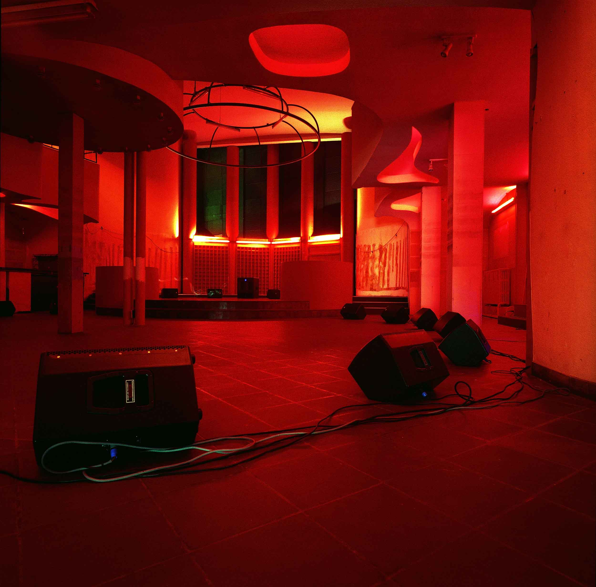
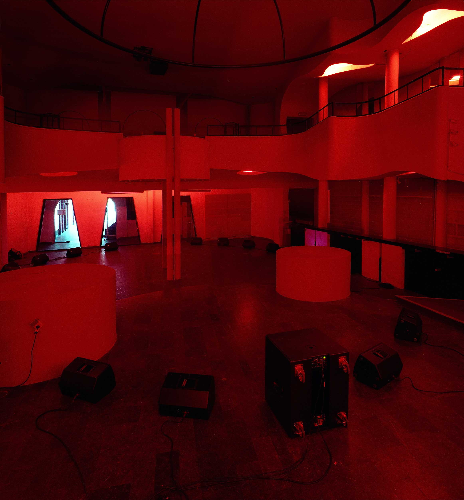

Kortrijk
2008
freq_out 7 will take place in September 2008 as part of the Happy New
Ears festival in Kortrijk, Belgium,
starting on 13th September.
Freq_out is a sound installation comprised of 12 individual sound works each utilizing a specific frequency
range, made on site, and amplified to act as a single, generative sound-space.
The artists in freq_out 7 are:
0-25 Hz PerMagnus Lindborg
25-65 Hz Jana Winderen
65-90 Hz Maia Urstad
90-140 Hz Brandon LaBelle
140-180 Hz Tommi Grönlund/Petteri Nisunen
180-250 Hz Finnbogi Petursson
250-350 Hz Franz Pomassl
350-500 Hz BJ Nilsen
500-1000 Hz Jacob Kirkegaard
1000-2000 Hz Mike Harding
2000-5000 Hz Kent Tankred
5000-12000 Hz JG Thirlwell

